Explore
Approved application · approved logoEvery image below is an actual canonical PNG. Open an image for its full resolution. These are authored design scenes, not current-app browser captures.
Threads · refreshing
threads-refreshingActions and implementation pointers
+ New page · Journal · Explore · All pages · ⌄ · Reflections · › · Reading · Ask Journl · Today’s Journal · Close · Instant · Thinking · ✓ Unlinked notes · All notes · ✓ Newest first · Oldest first
apps/web/src/app/(app)/explore/_components/explore-overview.tsxapps/web/src/app/(app)/explore/_components/cluster-items.tsxapps/web/src/app/(app)/explore/_components/source-contexts.tsx

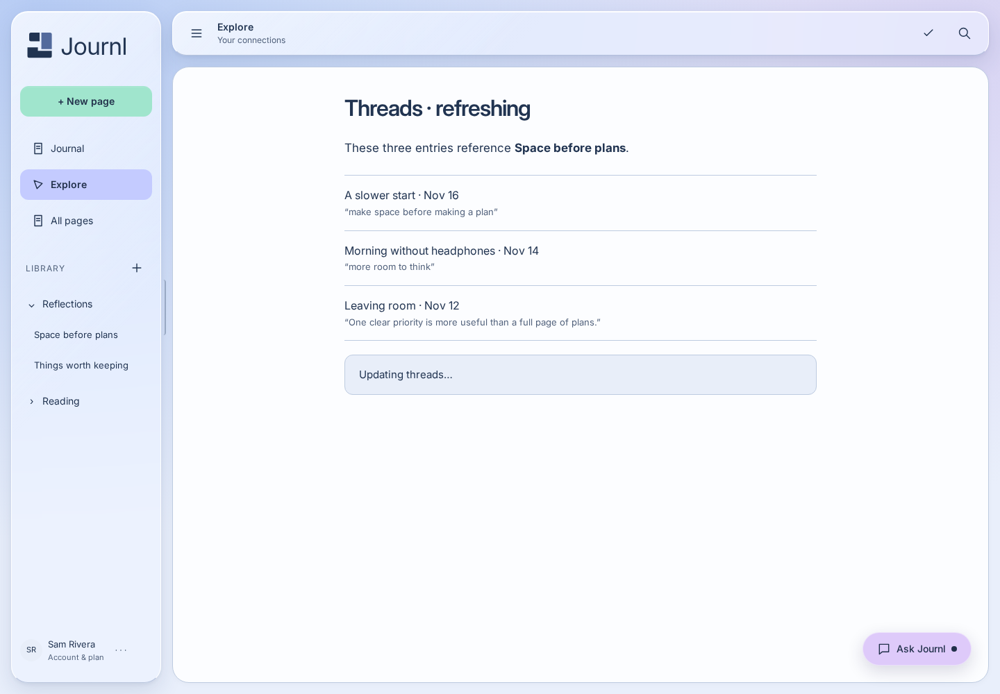
SHA256 be8b232fb80608cc512bbda388fbb4855ce4ad493069ac15a99f1f9e0ed4c010

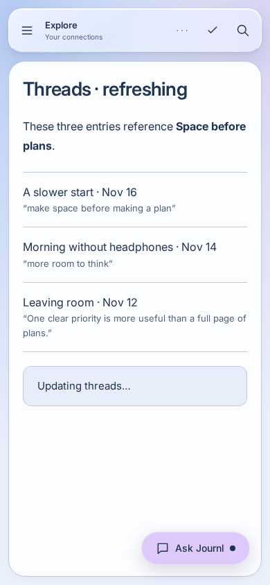
SHA256 92c9bd748c0169ad0e4bb2de325894e2c165f2d687761bc1def4f720769c7204

SHA256 e5a05255005cea64b3f747e91f659e9b26d8d2905d3f47b7ffb3f00c04d9e8e7

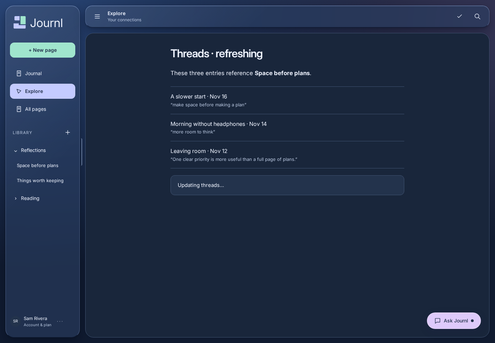
SHA256 de99652f83aded9b8a05c72fa4ef5c56bbbe99330a67fc8e1a4bf6553deab804
Threads · stale
threads-staleActions and implementation pointers
+ New page · Journal · Explore · All pages · ⌄ · Reflections · › · Reading · Refresh · Ask Journl · Today’s Journal · Close · Instant · Thinking · ✓ Unlinked notes · All notes · ✓ Newest first · Oldest first
apps/web/src/app/(app)/explore/_components/explore-overview.tsxapps/web/src/app/(app)/explore/_components/cluster-items.tsxapps/web/src/app/(app)/explore/_components/source-contexts.tsx

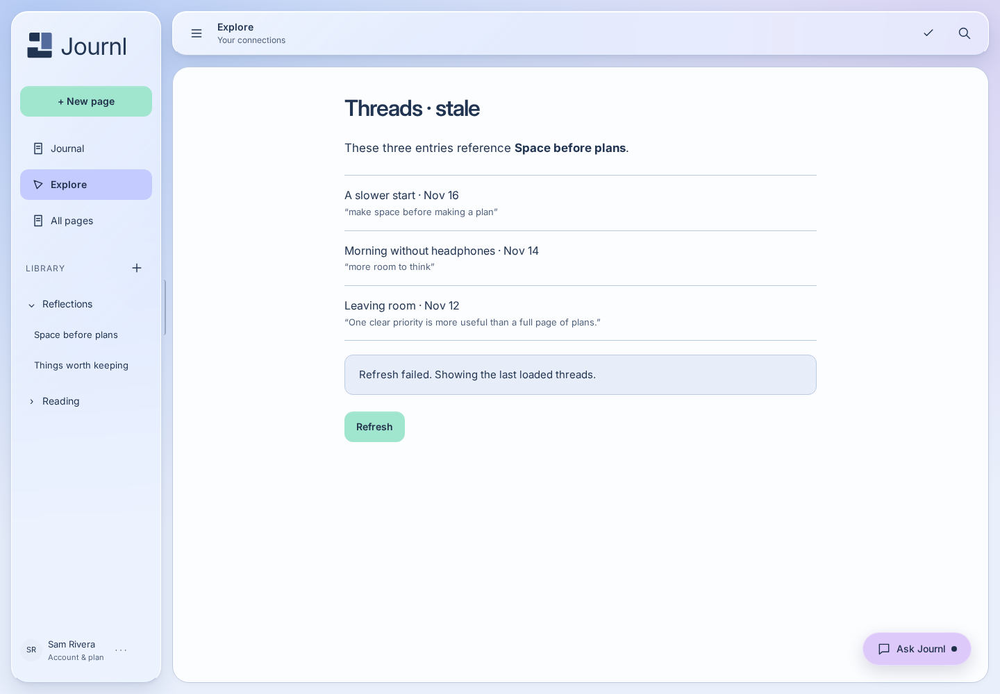
SHA256 5898efc6c802e430d90672f6f428ec754a5bee3ae6e31de2f96961d5d87838ae

SHA256 849b372a862053f74760facae54b3082848706d854508c5691e3a9db3ba4e093

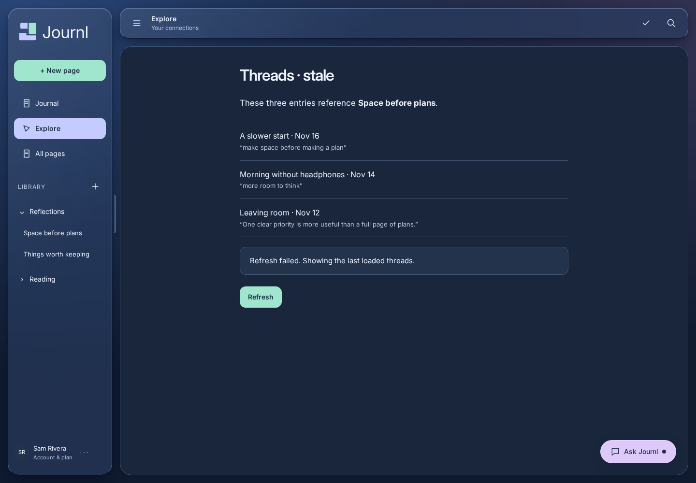
SHA256 9c02585abdb52081c85906fc4ceb589339ecc9d3fcd3e64722db651562933239

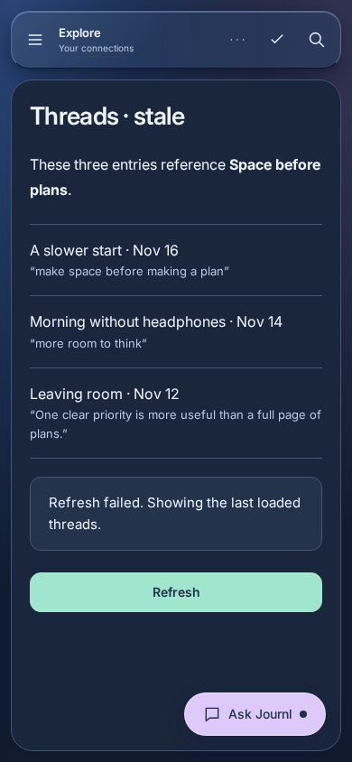
SHA256 69c574c0aee0b7c47cf6b3b504de7067b7283bc9b6f9e8b7da159f8c1d5abfd0
Recent notes · unlinked
filter-unlinkedActions and implementation pointers
+ New page · Journal · Explore · All pages · ⌄ · Reflections · › · Reading · Ask Journl · Today’s Journal · Close · Instant · Thinking · ✓ Unlinked notes · All notes · ✓ Newest first · Oldest first
apps/web/src/app/(app)/explore/_components/explore-overview.tsxapps/web/src/app/(app)/explore/_components/cluster-items.tsxapps/web/src/app/(app)/explore/_components/source-contexts.tsx

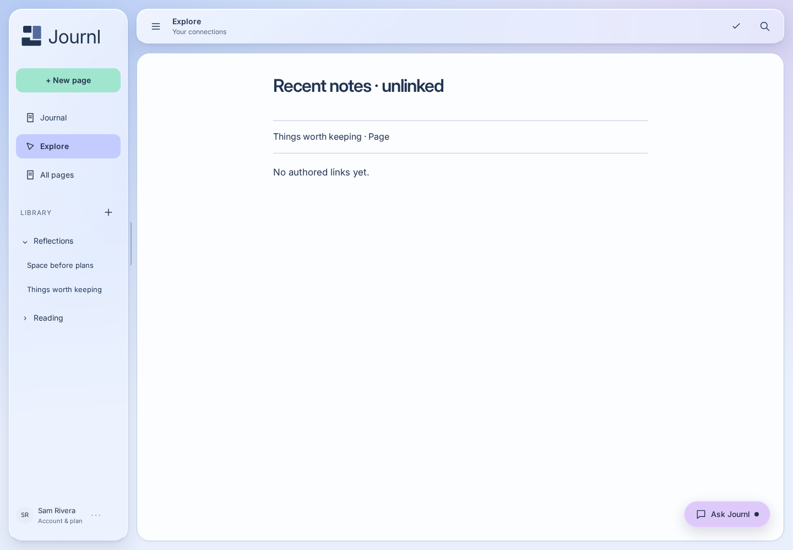
SHA256 40a8f5fa02e438dc45ac88f22ecd4f1c289e1c8d5f56024b759e0e853bf9ee2d

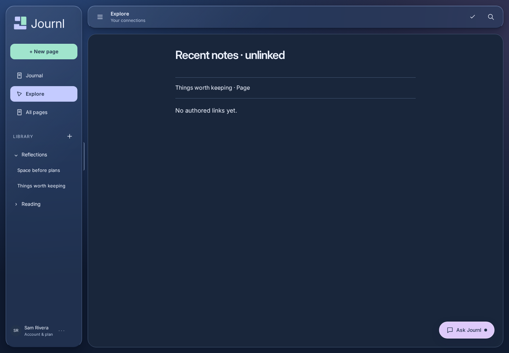
SHA256 e541850e0ea4b246fddac6fa76ab00aa4d971f906738d4620cf5d07856df6cf4

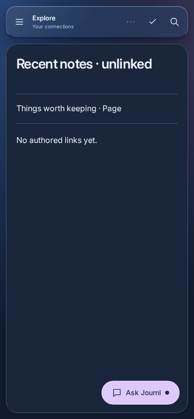
SHA256 cef7e8b9553a541afb4ed790faece4f54ec5aa65594c279264b611b71caec182

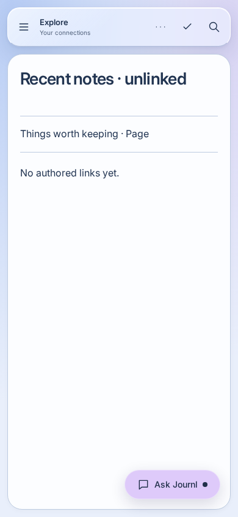
SHA256 a9d51c7e8bf87f0cd56caa81ce20b2e95273185aa5e9fdde94667d3c27218c8a
Recent notes · unlinked-empty
filter-unlinked-emptyActions and implementation pointers
+ New page · Journal · Explore · All pages · ⌄ · Reflections · › · Reading · Ask Journl · Today’s Journal · Close · Instant · Thinking · ✓ Unlinked notes · All notes · ✓ Newest first · Oldest first
apps/web/src/app/(app)/explore/_components/explore-overview.tsxapps/web/src/app/(app)/explore/_components/cluster-items.tsxapps/web/src/app/(app)/explore/_components/source-contexts.tsx

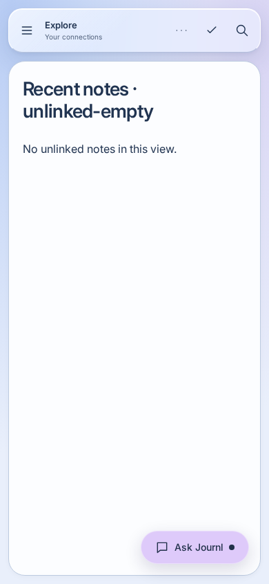
SHA256 b15cfe3eb82cf3874af3009bee47c073c88b0d3dacc480c4a20cad1023f59b44

SHA256 97360397a517c9dc94e6f6c9a67438ee753a3576ce832fead03c4c784a33537f

SHA256 9b5dcbd181d7ed20cd6ae762d7f8d56a585ca35609d23abdbc53fe112e983e79

SHA256 493842026a98c8e4beb3451a162a985e6d0c2d60db2a3de9d14dcfae1225c349
Recent notes · newest
filter-newestActions and implementation pointers
+ New page · Journal · Explore · All pages · ⌄ · Reflections · › · Reading · Newest first — selected · Oldest first · Ask Journl · Today’s Journal · Close · Instant · Thinking · ✓ Unlinked notes · All notes · ✓ Newest first
apps/web/src/app/(app)/explore/_components/explore-overview.tsxapps/web/src/app/(app)/explore/_components/cluster-items.tsxapps/web/src/app/(app)/explore/_components/source-contexts.tsx

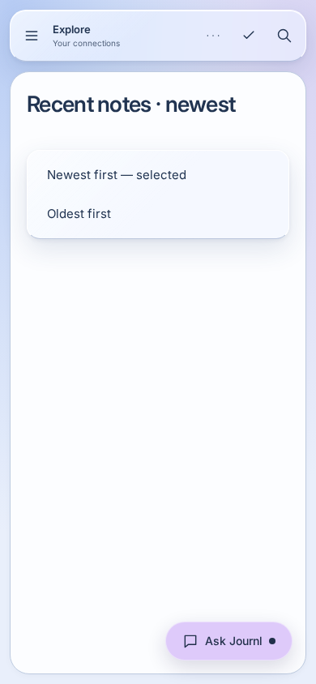
SHA256 9932f05065381d3f45697b7e268e04f73d798ef22983fd32a16799458826b105

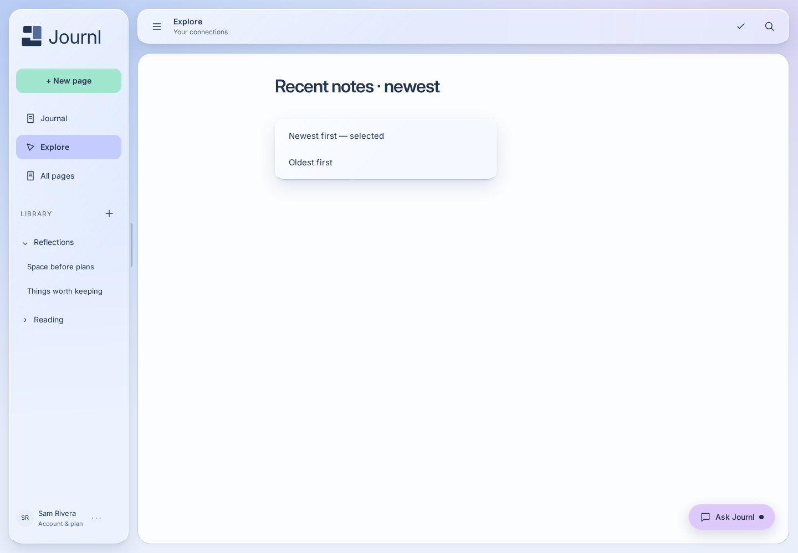
SHA256 c46eacd0f863655d5dd5a313446612d3189c3490d39f8e9c5682549ae819ee60

SHA256 44ba0a658020ed62d1fb359cb3b6c290f0e192582220fb8f528cdde7a0fcc2d4

SHA256 435c5b8645bb76b54d828ca319368f8af698a0a4b79da3c978ce5a7ebc07807b
Recent notes · oldest
filter-oldestActions and implementation pointers
+ New page · Journal · Explore · All pages · ⌄ · Reflections · › · Reading · Newest first · Oldest first — selected · Ask Journl · Today’s Journal · Close · Instant · Thinking · ✓ Unlinked notes · All notes · ✓ Newest first · Oldest first
apps/web/src/app/(app)/explore/_components/explore-overview.tsxapps/web/src/app/(app)/explore/_components/cluster-items.tsxapps/web/src/app/(app)/explore/_components/source-contexts.tsx

SHA256 ecd30779481f1c701921fc0d43ae70d7b1b590455d4327371a9d884ed6e596bf

SHA256 1020e764cf968ab8fa2586c9275e61cf64be47b711f148ebe45f510854164904

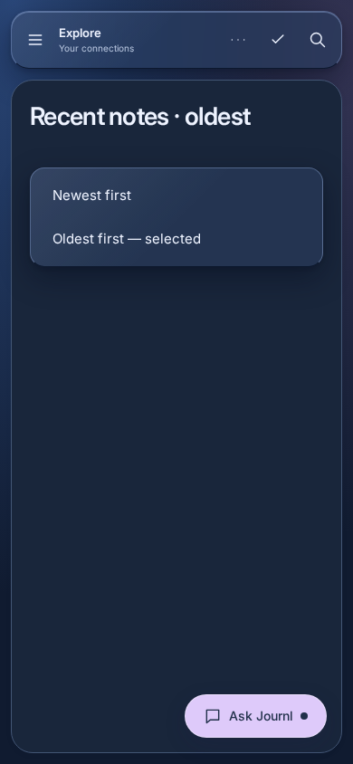
SHA256 243414aac5ff18b93307d9d91492166d55fdac0e3fa52ef59aef00ee1be73c9c

SHA256 48455ff484463caf739e529e5fcbfc39854c334b0ff59936b6d64ea2ffdf909b
Threads · independent pages
threads-paginationActions and implementation pointers
+ New page · Journal · Explore · All pages · ⌄ · Reflections · › · Reading · Previous · Next · Ask Journl · Today’s Journal · Close · Instant · Thinking · ✓ Unlinked notes · All notes · ✓ Newest first · Oldest first
apps/web/src/app/(app)/explore/_components/explore-overview.tsxapps/web/src/app/(app)/explore/_components/cluster-items.tsxapps/web/src/app/(app)/explore/_components/source-contexts.tsx

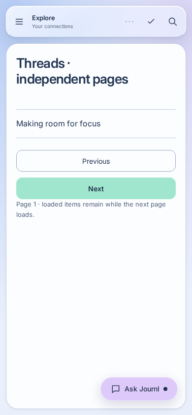
SHA256 df9e95aa3a548ebe50a9910590bd267b41a0184735ddcf6482a204ab94344cb7

SHA256 c78602748eec80e5a19a9b3bf8dea24962e6920c13b1f0183da7a3497c31437c

SHA256 f12ab0c64dc3615976a9f4a283089cd80fe58ea45bc64abf06d7d934193b4987

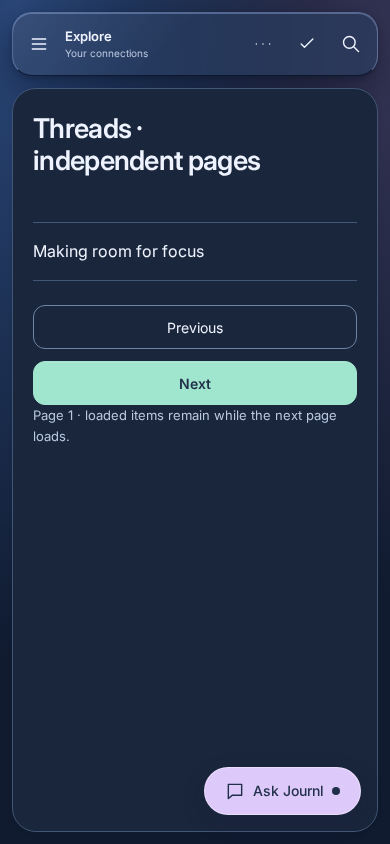
SHA256 ec249dfde96eada43fea4c4981c1b84ba6165bf55c6e1df267b50f398ad756f6
Threads · next page
threads-page-loadingActions and implementation pointers
+ New page · Journal · Explore · All pages · ⌄ · Reflections · › · Reading · Ask Journl · Today’s Journal · Close · Instant · Thinking · ✓ Unlinked notes · All notes · ✓ Newest first · Oldest first
apps/web/src/app/(app)/explore/_components/explore-overview.tsxapps/web/src/app/(app)/explore/_components/cluster-items.tsxapps/web/src/app/(app)/explore/_components/source-contexts.tsx

SHA256 3ea7723bb1cd3822c3dee73cc1b5e0fe67a8d283f3aca08daa410ad2d513af45

SHA256 7efb893fc2c66bf89cdadf39cd2028aec8e7dc05c65983b4e9a9b37449e4d646

SHA256 67b5dc0fa3db74f2453c2c0e39e1a5fcaa748981b5ee6a1b3a3ffef69a0544ce

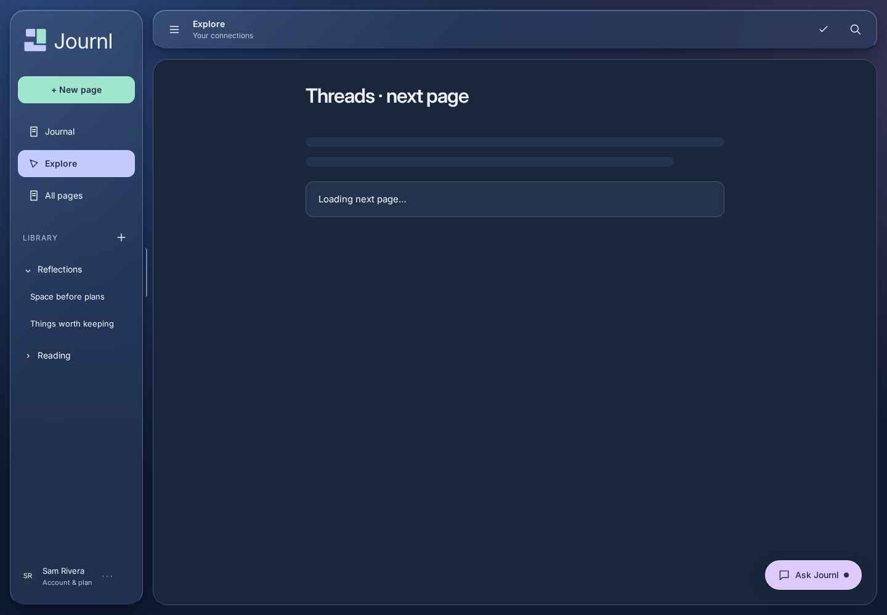
SHA256 f092a4f4b343cd70b51864677c2928b649ac77ef4706ed8fdd2bac18cf36a616
Threads · retry page
threads-page-errorActions and implementation pointers
+ New page · Journal · Explore · All pages · ⌄ · Reflections · › · Reading · Retry next page · Ask Journl · Today’s Journal · Close · Instant · Thinking · ✓ Unlinked notes · All notes · ✓ Newest first · Oldest first
apps/web/src/app/(app)/explore/_components/explore-overview.tsxapps/web/src/app/(app)/explore/_components/cluster-items.tsxapps/web/src/app/(app)/explore/_components/source-contexts.tsx

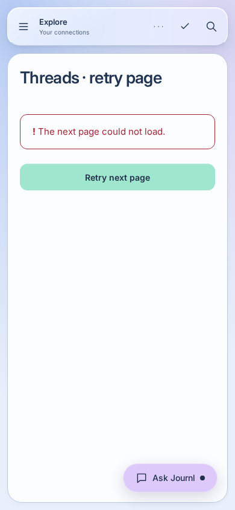
SHA256 0074bf30caa85b676bd2b4caa68d6e6562cf301ea5b077ff8ce02808c28337d4

SHA256 d3a5d8e58de6c37b6b5050ccd2c6608b4cbd9e2b8afe76aeafb7894dc9d2072d

SHA256 47ea92b49344ad24c90e3efa4b85563a74aade3ac478603e21df8cc68e87e9d2

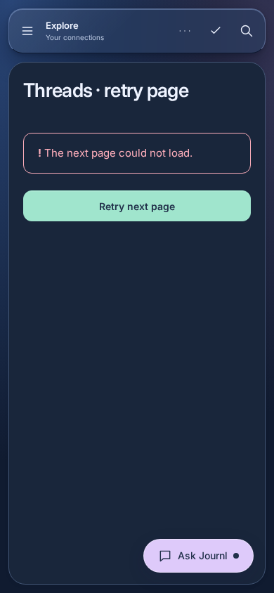
SHA256 a7e5d57ee84736c9430eefedebc335ce9581c060031086a6df5640461834ed4f
Notes · independent pages
notes-paginationActions and implementation pointers
+ New page · Journal · Explore · All pages · ⌄ · Reflections · › · Reading · Previous · Next · Ask Journl · Today’s Journal · Close · Instant · Thinking · ✓ Unlinked notes · All notes · ✓ Newest first · Oldest first
apps/web/src/app/(app)/explore/_components/explore-overview.tsxapps/web/src/app/(app)/explore/_components/cluster-items.tsxapps/web/src/app/(app)/explore/_components/source-contexts.tsx

SHA256 1464907971602c7650dd9e38bfbec4e801647466f99c77c0810bbe525bad3cfa

SHA256 7417a1e9a7d951148b886ab41fa9347311f6a263b122f457aa885f3b38c8c8a7

SHA256 438a9339358360e39896ac20730acd664e91e83487f2732711ac2f4bb5eab7f6

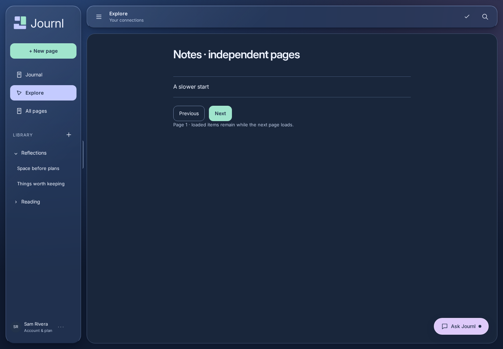
SHA256 9bb235d26d1f74d1d8342ba3ce63009bab6f2aa9be9a886d141b0b51bde3a9b7